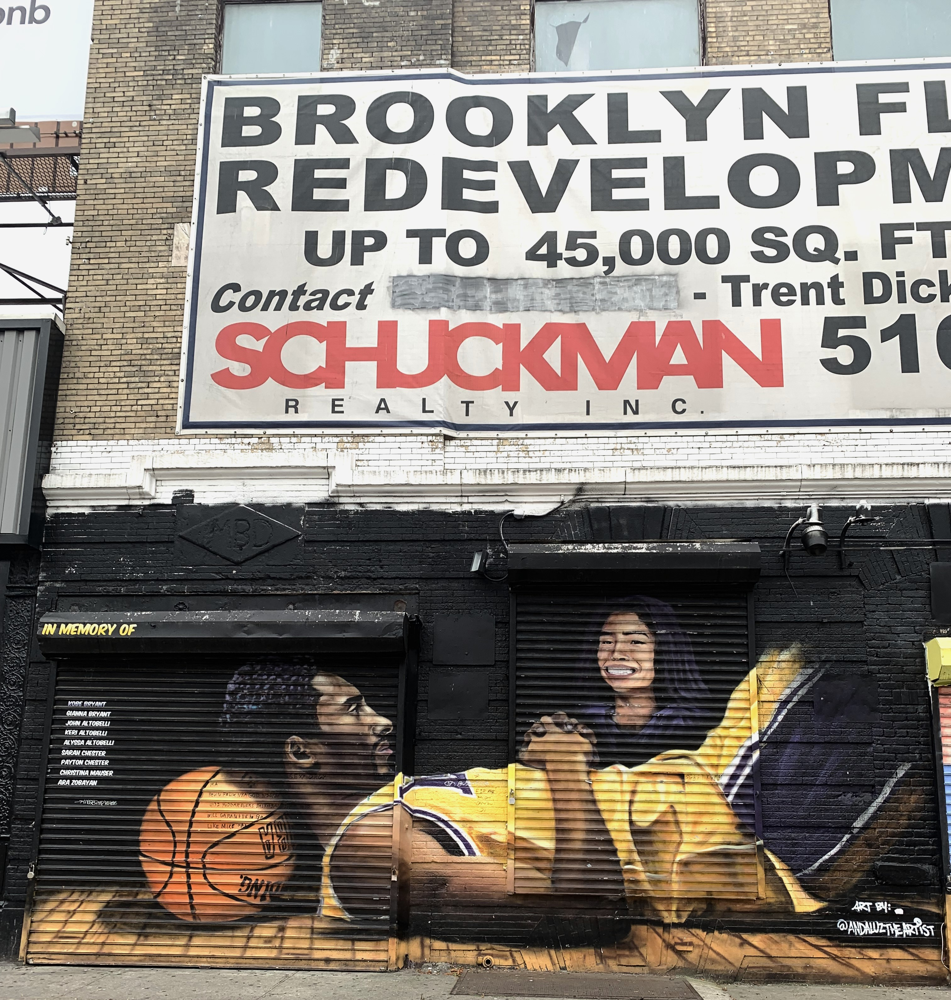
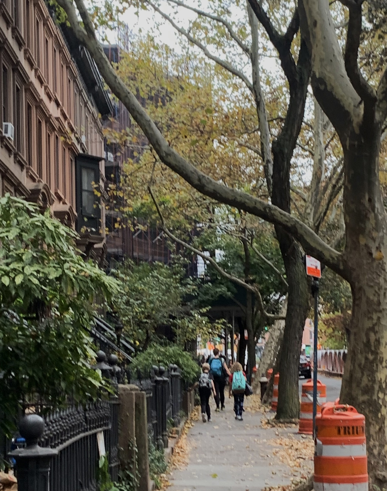
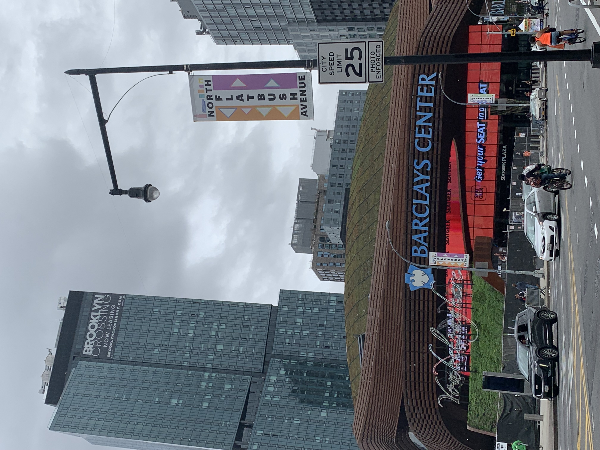
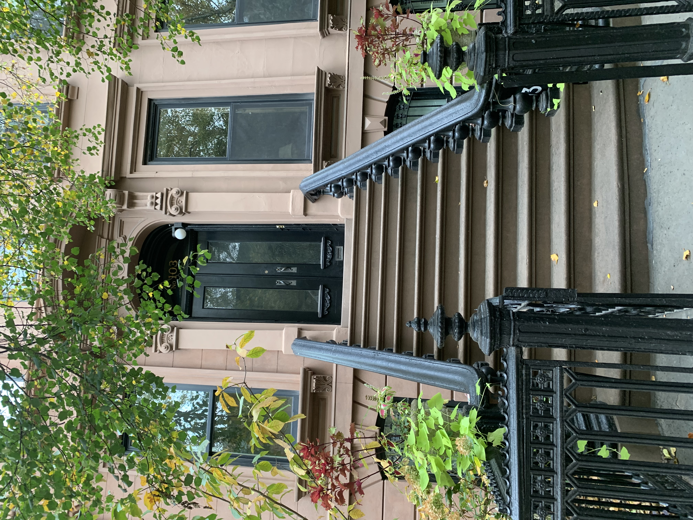
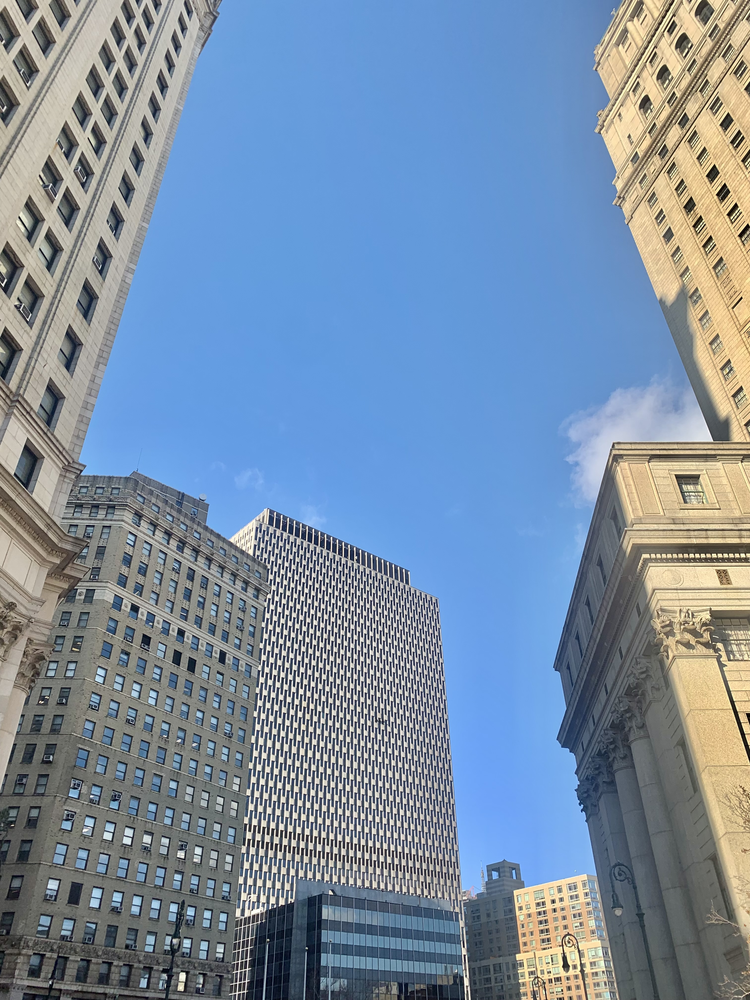

This is an image of Kobe Bryant and his daughter Vanessa who tragedically died in a helicopter crash on March 25, 2020. This mural is an image of local
fans' mourning Kobe Bryant and his daugther Vanessa Bryant. Right above this mural is a redevelopment flyer which signifies the gentrification happening in this Brooklyn neighborhood.
Not only are they mourning the lost of beloved celebrities, but also they are mourning the loss of their homes.

From the 1990s to early 2000s data collection from the Census was used to understand gentrification.
Researchers found that middle class Black families gentrified lower class Black families' neighborhoods.
Middle class Black families would move in because they see the value of neighborhood increasing and they prefer to live historical Black neighborhood
where they experience fewer micoagressions and less racism.
There was a limitation to the study that the Census conducted. The limitation was that there was not a precise indicator of what causes gentrification.
This brings to question how can we find factors of gentrification when people take part in gentrification consciously or unconsciously.

From 2000 to 2010, 6,700 to 15,6000 white people have moved into neighborhoods that were predonimantly Black and Latino.
This led to the decrease of Black and Latino residents. This is called displacement.
Displacement is when homes or apartments are being left by residents who can no longer afford to pay high prices.
Brooklyn locals are leaving due to big increases in rent, facing harassments from landlords, and landlords witholding repairs in order to get tenants who will pay higher rent.

The development of the Barclays Center has increased the number of people living in the neighborhood and has increased businesses in the
area such as restaurants and stores. In the article, The Barclays Center: Impact on the Community | Brooklyn's Sports: Past, Present, Future
, a pharmacy owner said that the development of the Barclays Center didn't increase their profit, a lot of residents had to leave to make space for the development of Barclays Center,
and the development of Barclays Center increased the price of rent.

The Invention of Brownstone Brooklyn is a non-fiction book about gentrification. The author called the people that moved from the East River of Manhattan to Brooklyn gentrifiers.
The landlords would make accomadtions to people that started moving in to Brooklyn because they would have more buying power than the locals in Brooklyn.
Most people starting to live in Brooklyn for the first time had white-collar jobs.
In 1971, a survey was taken by brownstone owners.
The survey revealed that people that just started living in Brooklyn were 99% white, 60% graduated from college, and 98.7% earned in the top five percent of New York households.

More luxurious buildings are being built in Brooklyn. To illustrate this point, many of the upscale buildings in Williamsburg were once warehouses and factories.
For example, there was a factory called Domino Sugar factory.
It was in redevelopment before it was shut down and sold to Two Tree Company.
The Two Tree Company made luxurious apartments which would make the rent more costly around the area.
This increases the rent for tenants.
Therefore, only a certain number of people can rent the apartments while others had to move out.
Your Thoughts on Gentrification
Response:
Age:
| Response | Age |
|---|